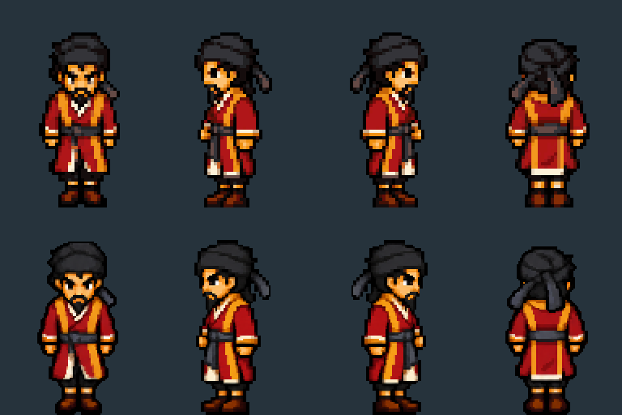

Song Jiang · Preserved detail
Original colours and sharper facial features. Same character size on screen.
Down
Left
Right
Up / back
Sword guard
Loading…
The revised sprites retain the generated colours and use twice the resolution. The sword has a wider frame so the character keeps his scale. This is a detail-preserving revision; the source artwork still has small differences between poses.
Still comparison: previous above, revised below
Both rows display the character at the same height.

Walking sheetBattle sheetDesign notes